みんなのアプリラボ は、プログラムを書かずにWEBアプリを作れるノーコードエディターです。中学校技術科の授業で、生徒が「課題解決のためのアプリ」を設計・作成・評価する一連の活動を1つのツールでサポートします。
生徒はパスワードでログインしてエディターを開き、パーツを並べてアプリを組み立てます。完成したアプリは同じURLで友達も使えて、記録データ・AI相談・レビューがすべてスプレッドシートに自動保存されます。先生はそのデータをリアルタイムで確認できます。
設定が完了すれば、以降の授業では URL を共有するだけで使えます。所要時間：約 15〜20 分。
| 列 | 内容 | 入力例 | 注意 |
|---|---|---|---|
| A列 | 名簿番号（数値） | 1, 2, 3… | 重複しないこと |
| B列 | パスワード | pass01, pass02… | 生徒に配布する文字列 |
| C列 | 生徒の名前 | 田中太郎 | エディターの表示名になります |
| D〜 | アプリ定義JSON・公開URL | （自動で埋まります） | 触らないでください |
先生用のパスワードは GAS スクリプトプロパティの TEACHER_PASSWORD で設定します（後述）。先生は「生徒情報」シートに追加せず、別パスワードでログインします。
| プロパティ名 | 値の内容 | 必須 |
|---|---|---|
| AZURE_OPENAI_ENDPOINT | Azure OpenAI のエンドポイント URL | AIを使う場合 |
| AZURE_OPENAI_API_KEY | Azure OpenAI の API キー | AIを使う場合 |
| AZURE_OPENAI_DEPLOYMENT | デプロイメント名（例：gpt-4o） | AIを使う場合 |
| OPENAI_API_KEY | OpenAI の API キー（Azure の代わりに使う場合） | どちらか片方 |
| TEACHER_PASSWORD | 先生ログイン用パスワード（任意の文字列） | 必須 |
AI 関連のプロパティを設定しなくても、記録・グラフ・レビュー機能は使えます。その場合、AIアドバイスパーツはエラーを返しますのでご注意ください。
GAS のコードを変更した後は「デプロイ」→「デプロイを管理」→「編集（鉛筆アイコン）」→「バージョン（新しいバージョン）」で保存してください。URL は変わりません。
デプロイ後に URL を開くと、パスワード入力画面が表示されます。先生用パスワードでログインすると直接先生エディターへ、生徒用パスワードでログインするとエディターへ遷移します。
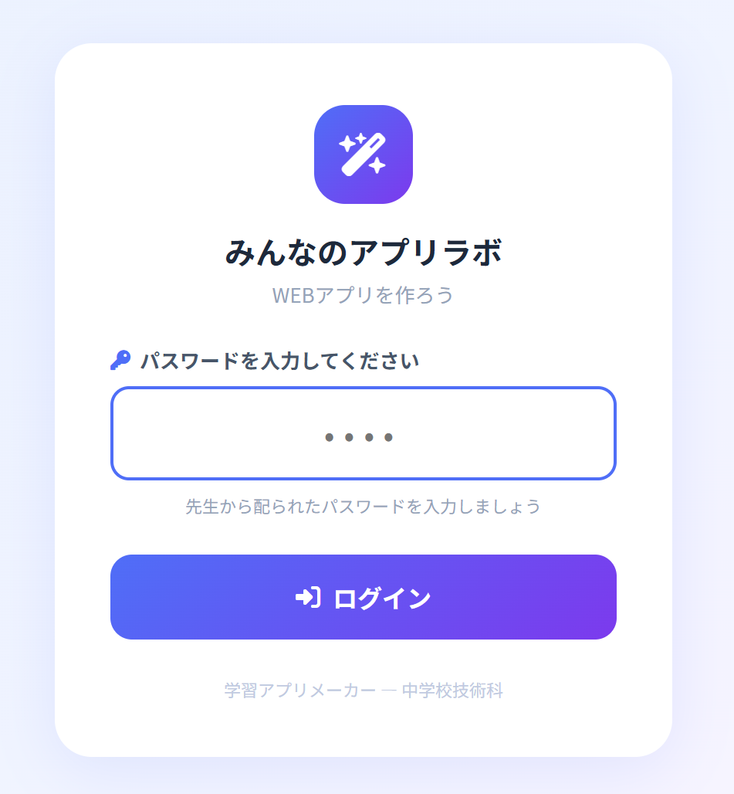
生徒がパスワードでログインすると、みんなのアプリラボ エディターが開きます。左のサイドバーでパーツを選んで追加し、中央のスマホプレビューでリアルタイムに確認しながらアプリを組み立てます。
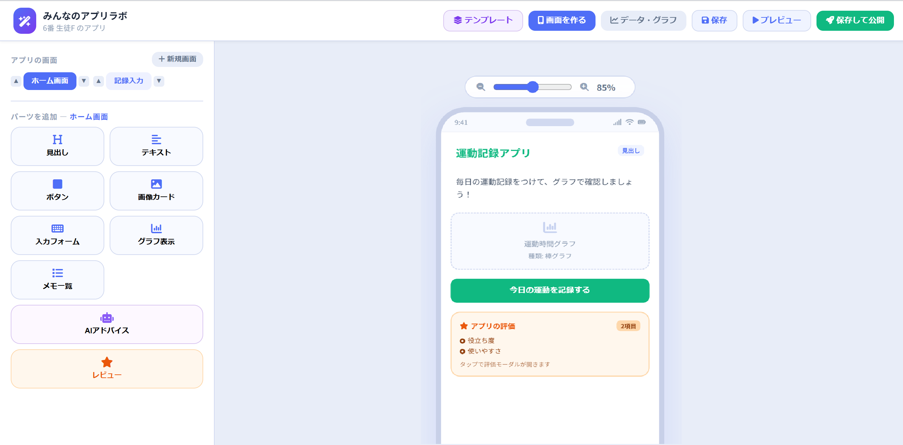
| パーツ | できること | 設定できる項目 |
|---|---|---|
| 見出し | 画面タイトルや区切りの大きな文字 | テキスト・文字色・サイズ・太字・下線 |
| テキスト | 説明文・メモ | テキスト・文字色・サイズ・太字・下線 |
| ボタン | 画面移動・データ保存・URL を開く・メッセージ表示 | ボタン文字・色・アクションの種類 |
| 画像カード | URL 指定で画像を表示 | タイトル・説明文・画像URL |
| 入力フォーム | 数値またはメモを入力する欄 | ヒント文・役割（数値 or メモ） |
| グラフ表示 | 保存されたデータを棒・折れ線・円グラフで表示 | タイトル・種類・縦軸上限・対象フォーム |
| メモ一覧 | 保存されたメモを日付順で一覧表示 | 一覧タイトル |
| AIアドバイス | 生徒が入力した文章に AI が回答 | 見出し・ラベル・システムプロンプト |
| レビュー | アプリへの評価を収集するボタン | タイトル・評価項目（複数設定可） |
入力フォームは、生徒がアプリに数値やメモを入力するためのパーツです。グラフ表示・保存ボタンと組み合わせて使います。
| 設定項目 | 内容 | 例 |
|---|---|---|
| ヒント文（プレースホルダー） | 入力欄に薄く表示されるガイドテキスト | 「今日の歩数を入力」「体重（kg）」 |
| 役割 | 「数値入力」または「メモ入力」を選ぶ | 歩数・体重などは「数値」、感想などは「メモ」 |
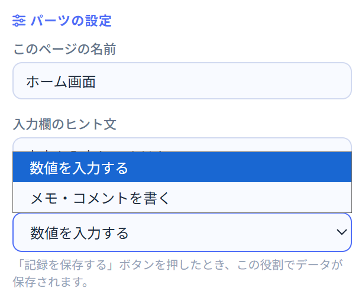
グラフ表示パーツは、保存された数値データを自動でグラフ化します。「グラフに使う入力フォーム」を必ず設定してください。設定しないとデータが表示されません。
| 設定項目 | 内容 |
|---|---|
| グラフタイトル | グラフの上に表示される名前（例：「歩数の記録」） |
| グラフの種類 | 棒グラフ・折れ線グラフ・円グラフから選ぶ |
| 縦軸の最大値 | グラフのY軸上限（空欄でデータに合わせて自動） |
| グラフに使う入力フォーム ⭐ | このグラフに表示するデータの入力元フォームを選ぶ。アプリ内の全ページの数値フォームが選択肢に出ます。 |
グラフパーツと入力フォームは自動でつながりません。プロパティパネルでどの入力フォームのデータを使うかを明示的に選ぶ必要があります。同様に、保存ボタンも「保存する入力フォーム」を指定します。
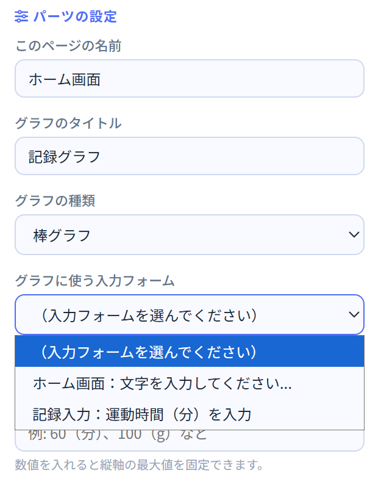
データを正しく記録・表示するには、3つのパーツを同じ入力フォームで紐づけることが重要です。
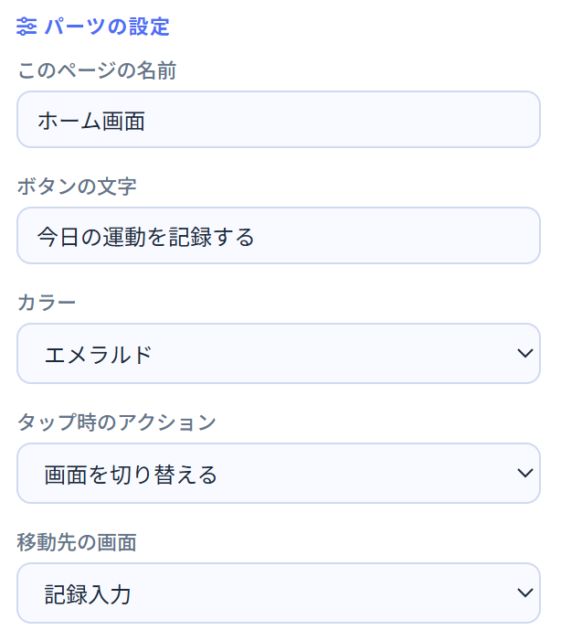
サイドバー上部の「＋ 新規画面」で画面を追加できます。▲▼ボタンで順番を並び替えることもできます。ボタンパーツの「タップ時のアクション → 画面を切り替える」で画面間の移動を設定します。
キー名が home の画面が公開アプリの最初のページになります。テンプレートを使うと自動的に設定されます。
| ボタン | 何をするか |
|---|---|
| 💾 保存 | アプリの定義をスプレッドシートに保存します。公開はされません。 |
| ▶ プレビュー | 現在の編集内容を別タブでプレビューします（保存せず確認）。 |
| 🚀 保存して公開 | 保存してから公開アプリのURLを別タブで開きます。友達が使える状態になります。 |
右上の「テンプレート」ボタンから「運動記録」「食事記録」「睡眠記録」などのひな形を選んで始めると、基本的な構成が自動で入ります。そこからカスタマイズしましょう。
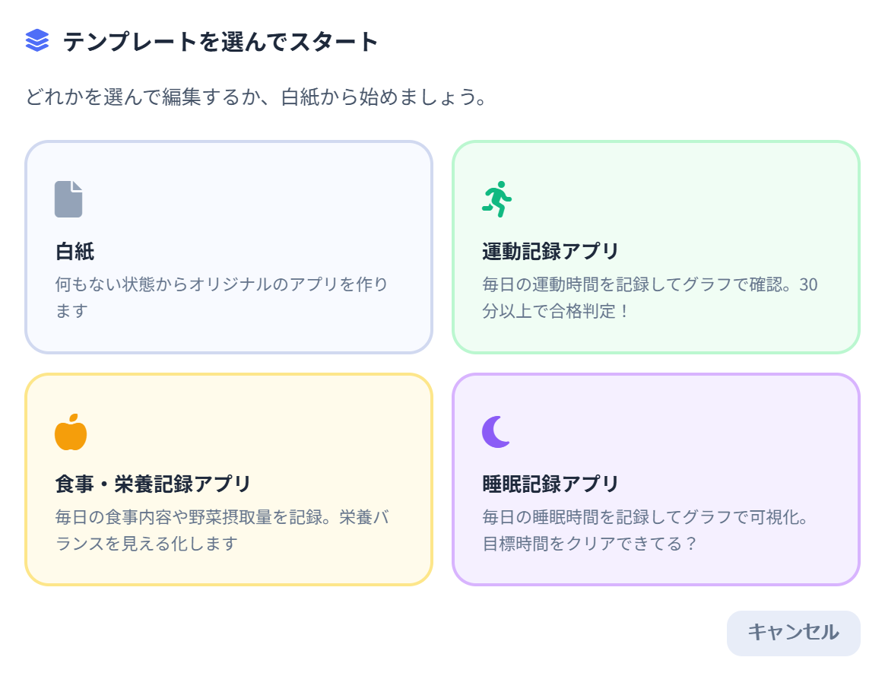
「保存して公開」を押すと、同じURLで作ったアプリが誰でも使えるようになります。友達がアプリを使うと、そのデータはエディターの「データ・グラフ」タブから確認できます。
アプリを開くと、最初に名前の入力画面が表示されます。入力した名前でデータが保存されます。毎回同じ名前を入力するよう生徒に伝えてください。
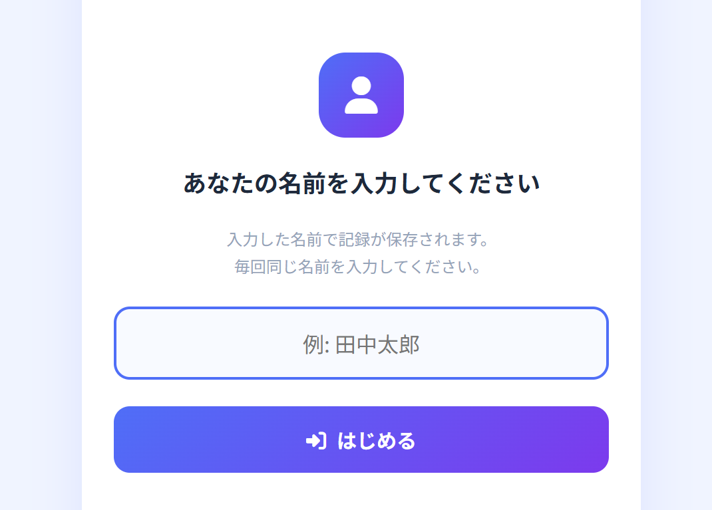
入力フォームに数値やメモを入力して「記録を保存する」ボタンを押すと、スプレッドシートに保存されます。グラフパーツが同じ画面にあれば、保存後に自動でグラフが更新されます。
グラフには、ログインした名前（ユーザー名）で保存されたデータだけが表示されます。ほかの人のデータは先生のデータ確認タブからのみ見られます。
AIアドバイスパーツが配置されている場合、テキストエリアに質問を入力してボタンを押すと AI が回答します。やり取りはスプレッドシートの「AIログ」シートに自動記録されます。
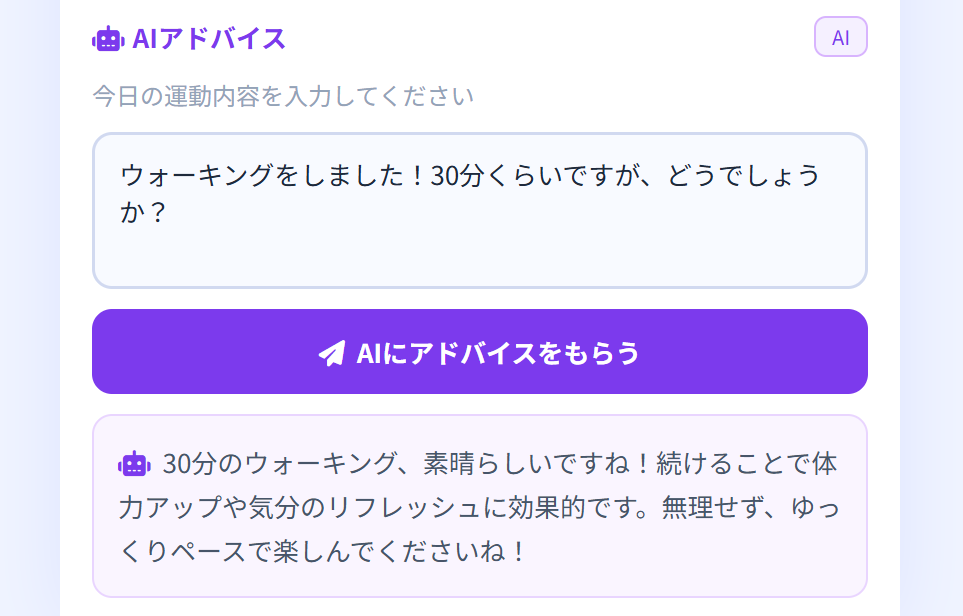
エディターのAIアドバイスパーツのプロパティにある「システムプロンプト」が AI の役割・制限を決めます。
レビューパーツのボタンをタップするとモーダルが開きます。▲・○・◎の3段階と自由コメントでアプリを評価できます。送信するとスプレッドシートの「レビュー」シートに保存されます。
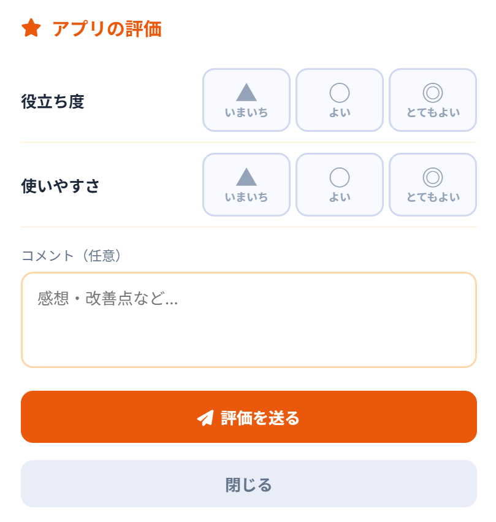
生徒がパスワードでログインしてエディターを開き、画面右上の「データ・グラフ」ボタンを押すと確認できます。
データは3つのタブに分かれています。
アプリを使って保存されたすべての記録を一覧で確認できます。上部のフィルターチップでユーザー別に絞り込めます。不正なデータや誤入力があれば削除することもできます。
| 表示内容 | 説明 |
|---|---|
| 統計カード | ユーザー数・総記録数・平均値を自動集計 |
| ユーザー絞り込み | 名前ボタンで特定ユーザーのデータだけ表示 |
| 記録一覧テーブル | ユーザー名・日付・数値・メモ・登録日時 |
| 削除ボタン | 誤入力や不正なデータを削除できます |
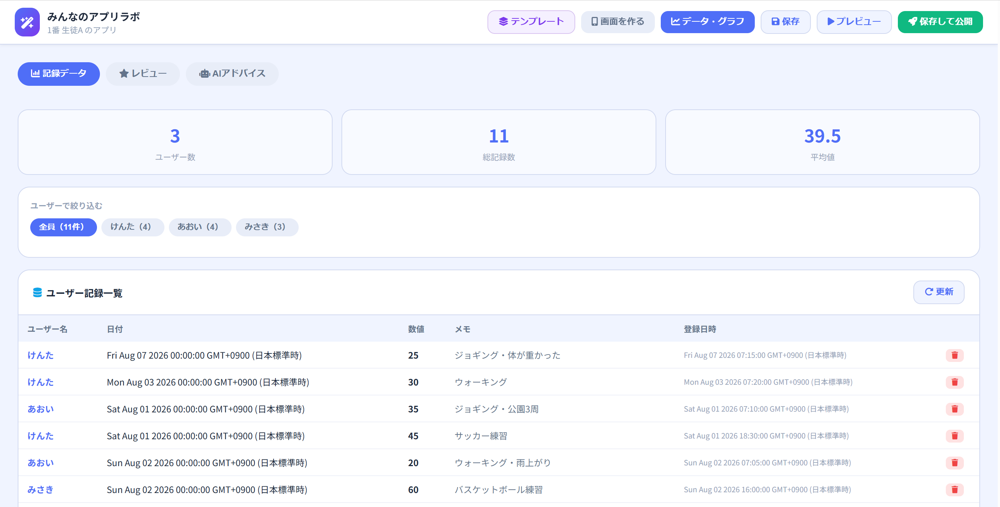
アプリを使った人からのレビュー（評価）を集計して表示します。このタブはアプリを作った生徒自身がエディターで確認します。自分のアプリへの評価をグラフや一覧で見ながら、改善や考察に活かすことができます。
| 表示内容 | 説明 |
|---|---|
| 総合平均スコア | ▲=1・○=2・◎=3 の平均値を表示 |
| 項目別円グラフ | 評価項目ごとの人数内訳（▲○◎）を視覚化 |
| 期間フィルター | 日付範囲でレビューを絞り込み |
| レビュー一覧 | ユーザー名・スコア・コメント・日時（新しい順） |
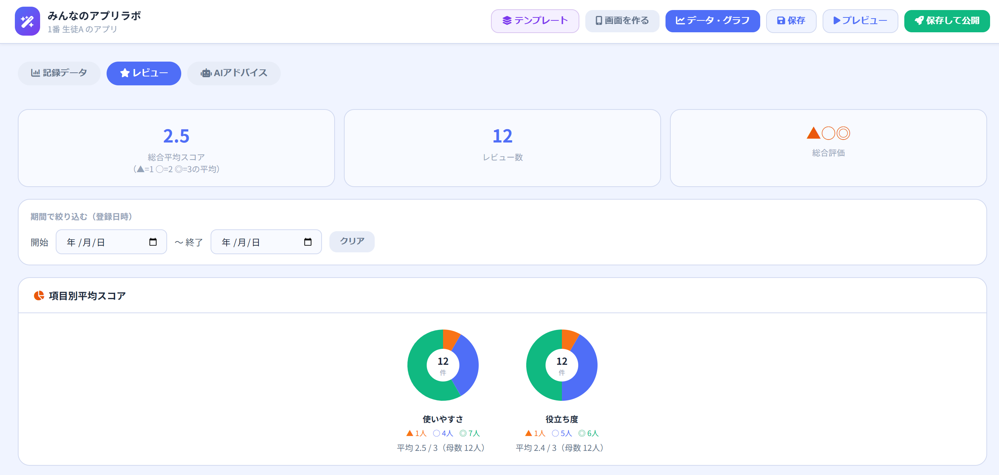
レビュータブの下部には「AIに分析してもらう」エリアがあります。生徒が自由に質問を入力すると、AIがレビューコメントや評価傾向をもとに回答します。
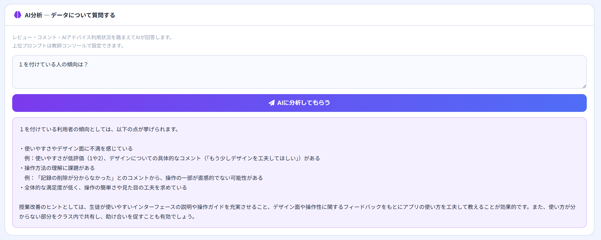
生徒がアプリのAIアドバイスパーツに送った質問と、AIの回答がすべて記録されています。アプリを作った生徒がエディターで確認します。どんな質問をしたか・どんな回答が返ってきたかを振り返ることができます。
| 表示内容 | 説明 |
|---|---|
| パーツ別絞り込み | 複数のAIアドバイスパーツがある場合、パーツごとに絞り込めます |
| 利用ログ一覧 | ユーザー名・送った質問・AIの回答・日時（新しい順） |
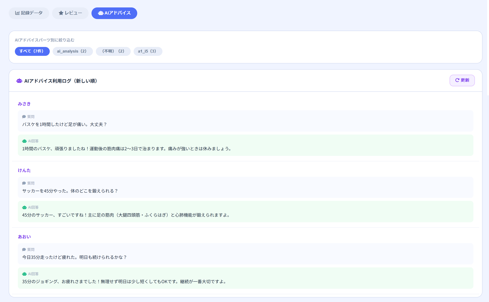
先生が各生徒のデータを確認したいときは、「生徒情報」シートのE列（公開URL）からアプリを開くか、生徒のパスワードでログインしてエディターのデータタブを確認してください。すべての記録・レビュー・AIログはスプレッドシートにもそのまま保存されています。
システムのデータはすべて Google スプレッドシートに保存されます。シートの役割を理解しておくとトラブル対応がしやすくなります。
| シート名 | 内容 | 操作者 |
|---|---|---|
| 生徒情報 | 名簿番号・パスワード・氏名・アプリ定義JSON・公開URL | 先生が手動入力（D列以降は自動） |
| ユーザー記録 | アプリで保存された記録（日付・数値・メモ） | システムが自動記録 |
| レビュー | アプリへの評価（スコア・コメント） | システムが自動記録 |
| AIログ | AIとのやり取り（質問・回答・パーツID） | システムが自動記録 |
| 記録データ | 旧形式の記録データ（下位互換用） | システムが自動記録 |
| アプリ設定 | アプリ全体の設定値（将来の拡張用） | システムが自動管理 |
D列（アプリ定義JSON）・E列（公開URL）はシステムが書き込む列です。手動で編集するとアプリが壊れる可能性があります。A〜C列のみ先生が操作してください。
ensureSheets を手動実行してシートを初期化するAZURE_OPENAI_ENDPOINT・AZURE_OPENAI_API_KEY・AZURE_OPENAI_DEPLOYMENT（または OPENAI_API_KEY）が正しく設定されているか確認callAI 関数を単体テスト実行してエラーを確認GAS のコードを変更した後は、必ず「デプロイ」→「デプロイを管理」→「編集」→「新しいバージョン」で保存してください。URL は変わりません。
エディター・アプリともにスマートフォン・タブレットのブラウザで動作します。エディターはパーツのプロパティ操作が多いため、PC での操作をおすすめします。完成したWEBアプリはスマートフォンでも快適に使える縦長レイアウトになっています。
「生徒情報」シートのD列にアプリ定義JSON が保存されています。E列の公開URLからアプリを直接開くこともできます。生徒がエディターで「保存」を押した時点で保存されます。